Part 1: Fun with Filters
.
Part 1.1: Convolutions from Scratch
Convolutions with loops
I selected a photo of mine and performed convolution from scratch with 4 for loops, 2 for loops, and scipy.signal.convolve2d. The convolutions are performed with a 9 x 9 box filter and the customized padding uses np.pad() function. The box filter is:
$$
K_{9 \times 9}(i,j) = \frac{1}{81}, \quad i,j \in {1,\dots,9}
$$
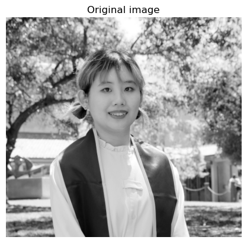
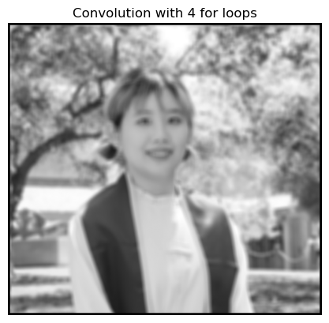
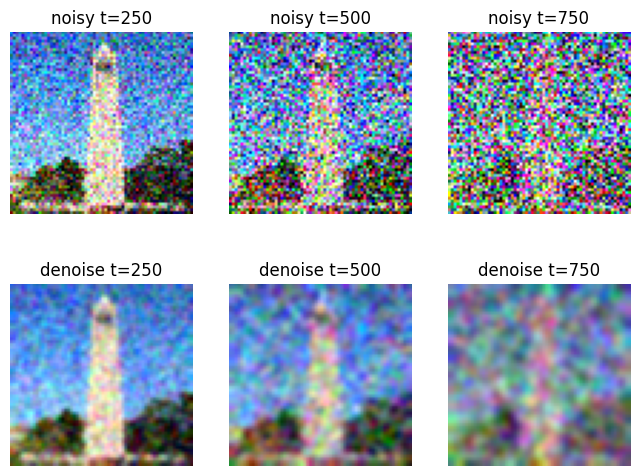
Convolution with 4 for loops
The function convolution_4_for_loops(image, filter) here carries out 2D convolution with four nested loops. The outer two loops slide across the image, while the inner two loops move over every element of the filter. At each position, it multiplies the filter values with the corresponding image patch pixel by pixel, sums them up, and assigns the result to the output. The edges are padded with zeros ('mode = constant' in np.pad).
def convolution_4_for_loops(image, filter): image_h, image_w = image.shape filter_h, filter_w = filter.shape # padding size pad_h = filter_h // 2 pad_w = filter_w // 2 # intiailize result image result_image = np.zeros((image_h - pad_h * 2, image_w - pad_w * 2)) # for loops for image for h in range(0,image_h - pad_h * 2 ): for w in range(0, image_w - 2* pad_w): current_pixel = 0 # for loops for filter for i in range(filter_h): for j in range(filter_w): current_pixel += image[h - pad_h + i, w - pad_w + j] * filter[i,j] # update value pixel by pixel result_image[h, w] = current_pixel padded_a_edge = np.pad(result_image, pad_width=((pad_h, pad_h), (pad_w, pad_w)), mode='constant') return padded_a_edgeConvolution with 2 for loops
The function convolution_2_for_loops(image, filter) performs 2D convolution using two loops. For each pixel, it extracts a patch the size of the filter, multiplies it element-wise with the filter, sums the result, and stores it in the output ('mode = constant' in np.pad).
def convolution_2_for_loops(image, filter): image_h, image_w = image.shape filter_h, filter_w = filter.shape # padding size pad_h = filter_h // 2 pad_w = filter_w // 2 # intiailize result image result_image = np.zeros((image_h - pad_h * 2, image_w - pad_w * 2)) # for loops for image for h in range(0,image_h - pad_h * 2 ): for w in range(0, image_w - 2* pad_w): current_image = image[ h : h+2*pad_h+1, w : w+2*pad_w+1] result_image[h, w] = np.sum(current_image * filter) padded_a_edge = np.pad(result_image, pad_width=((pad_h, pad_h), (pad_w, pad_w)), mode='constant') return padded_a_edgeComparing the methods
Comparing the two implementations, the four-loop version explicitly iterates over both the image and the filter, which makes it the slowest (≈7.9 s). The two-loop version is more efficient since it replaces the inner loops with NumPy operations, reducing the runtime to about 1.1 s. In contrast, the built-in scipy.signal.convolve2d is the fastest (≈0.7 s), as it is highly optimized. The results from all three methods are essentially the same, except for minor differences at the boundaries due to different padding treatments.
.
1.1.2 Convolution with finite difference operators
To compute partial derivatives in x and y directions, I used the following kernels:
$$
D_x = [\,1 \; 0 \; -1\,], \quad D_y = \begin{bmatrix} 1 \ 0 \ -1 \end{bmatrix}
$$
These are discrete approximations of image gradients:
$$
\frac{\partial I}{\partial x} \approx I * D_x, \quad \frac{\partial I}{\partial y} \approx I * D_y
$$
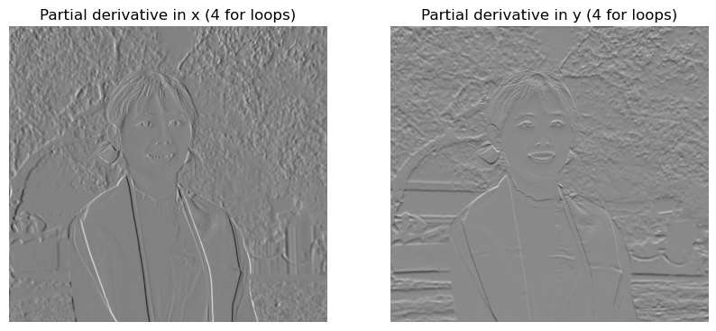
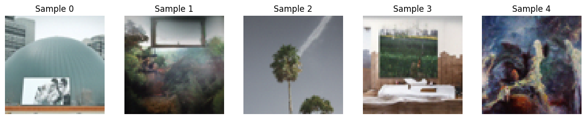
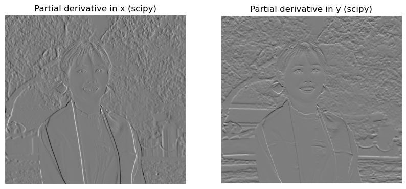
I computed the partial derivatives in both x and y directions using all three methods mentioned in the previous section. The results are similar, but there are still differences in runtime performance.
.
.
Part 1.2: Finite Difference Operator
Using the same finite difference operators \(D_x\) and \(D_y\) as the previous section, I performed partial derivatives of the cameraman image.
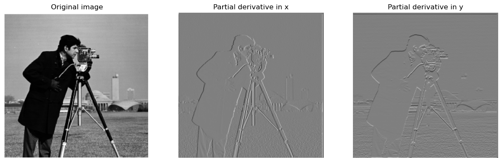
Then I combine them to form the gradient magnitude image. This image highlights edges regardless of their direction. The formula is:
$$
G(x,y) = \sqrt{\left(\frac{\partial I}{\partial x}(x,y)\right)^2 + \left(\frac{\partial I}{\partial y}(x,y)\right)^2}
$$
where \(G(x,y)\) represents the gradient magnitude at pixel \((x,y)\).
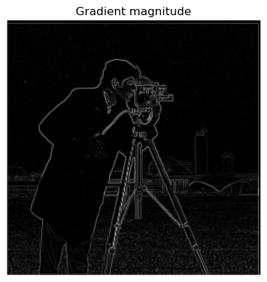
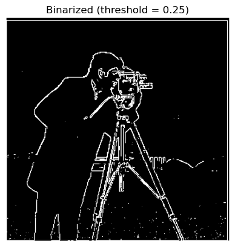
To convert the gradient magnitude image into a binary edge image, I used a threshold \(T = 0.25 \). This threshold is selected because it keeps most edges of the human and the camera, including some background information (to keep the edges, some noise is also kept). Pixels with gradient magnitude larger than \(T\) are marked as edges (1), otherwise suppressed (0):
$$
B(x,y) = \{
\begin{array}{ll}
1, & \text{if } G(x,y) > T \\
0, & \text{otherwise}
\end{array}
$$
As we can see the in the result binarized image, the operation successfully extracted the edges, but the result is a bit noisy.
.
.
Part 1.3: Derivative of Gaussian (DoG) Filter
Since the raw difference operator \(D_x\), \(D_y\) is sensitive to noise, here are two methods to solve the issue. The first method uses a Gaussian filter to blur the image and then applies finite difference operators (the two left images), the second method takes the derivative of the Gaussian filter then uses the filter to convolve the image (the two right images). The threshold for the binary edge images are still set as \(T = 0.25 \). The details of the process is as follows:
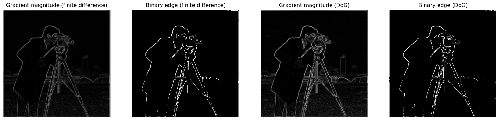
Gaussian blurring + Finite difference operators
The 2D Gaussian kernel is created from the outer product of a 1D Gaussian vector with its transpose. I then convolved the original image \(I\) with \(G\) to blur the image, and apply the finite difference filters:
$$ I_G = I * G, \quad
\frac{\partial I}{\partial x} \approx I_G * D_x, \quad
\frac{\partial I}{\partial y} \approx I_G * D_y
$$
Then I calculated the gradient magnitude and binary edge image with the same method as Part 1.2.
Derivative of gaussian (DoG) filters
Instead of performing two convolutions, here combines them into a single convolution by first computing the derivative of Gaussian filters:
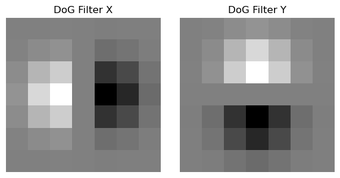
$$
DoG_x = G * D_x, \quad DoG_y = G * D_y
$$
Then, I convolved the image directly with these DoG filters:
$$
\frac{\partial I}{\partial x} \approx I * DoG_x, \quad
\frac{\partial I}{\partial y} \approx I * DoG_y
$$
Finally, I calculated the gradient magnitude and binary edge image with the same method as Part 1.2.
Observations
Both methods (Gaussian blurring + Finite difference operators & DoG filters) produce very similar edge maps. The main difference is that DoG combines the two steps into one convolution, making it more efficient. Moreover, the Gaussian smoothing helps reduce noise, so the edge maps are much more cleaner than when using the raw difference operator alone!
.
.
Bells & Whistles
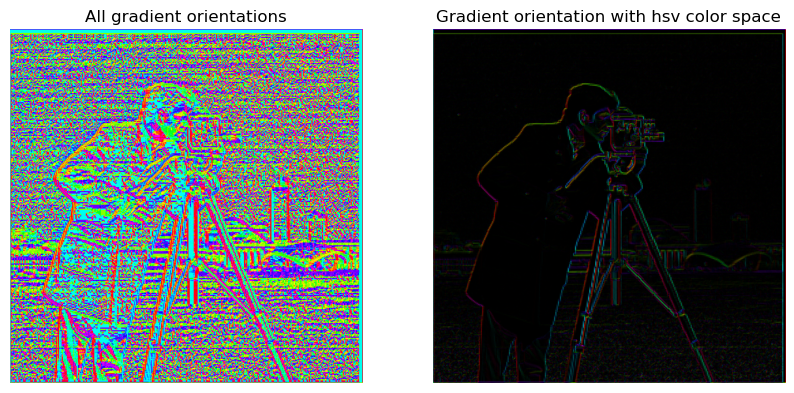
In this part, I computed both the gradient magnitude and the gradient orientation of the image. The partial derivatives in the x and y directions were obtained using the finite difference filters, and the orientation at each pixel was calculated with the arctangent function:
$$
\theta(x,y) = \arctan2\left( \frac{\partial I}{\partial y}, \frac{\partial I}{\partial x} \right)
$$
Visualizing all gradient orientations is a mess (left)! To better display the orientations, I mapped the results into the HSV color space with:
- Hue (H): encodes the gradient orientation (mapped from [−π,π] to [0,1])
- Saturation (S): set to 1 for full color
- Value (V): set to the normalized gradient magnitude
The result is shown as the right image. This way, edges in different directions appear in different colors, and the brightness reflects the edge strength.
.
.
Part 2: Fun with Frequencies!
.
Part 2.1: Image “Sharpening”
Process
The unsharp masking technique sharpens an image by enhancing its high-frequency components.
The first step is to perform low-pass filtering (Gaussian smoothing). Here I use kernel size = 7 and sigma = 1.
$$
I_{\text{smooth}} = I * G
$$
Then subtract the blurred image from the original to isolate details:
$$
I_{\text{details}} = I – I_{\text{smooth}}
$$
Next, add details back with scaling and use a factor α to control the sharping strength.
$$
I_{\text{sharp}} = I + \alpha \cdot I_{\text{details}}
$$
I also tried to operate the images with a single convolution kernel:
$$
H = (1+\alpha)\delta – \alpha G
$$
def unsharp_mask_single_conv(image, alpha=1): # create gaussian filter g_1d = cv2.getGaussianKernel(7, 1) g_2d = np.outer(g_1d, g_1d.T) g_2d = g_2d / g_2d.sum() # normalize # create identity kernel delta delta = np.zeros_like(g_2d) center = (g_2d.shape[0]//2, g_2d.shape[1]//2) delta[center] = 1.0 # build unsharp mask filter kernel single_kernel = (1 + alpha) * delta - alpha * g_2d # apply filter to each channel sharpened = np.zeros_like(image) for i in range(3): sharpened[:,:,i] = scipy.signal.convolve2d(image[:,:,i], single_kernel, mode='same') return np.clip(sharpened, 0, 1)Results
Here I operated the function on the Taj image and a concrete house image. I compare the results of α = 1 and α = 3.
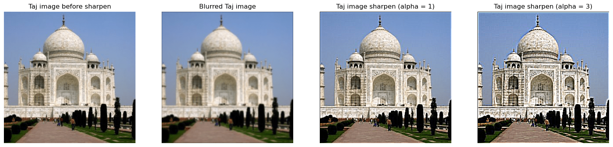
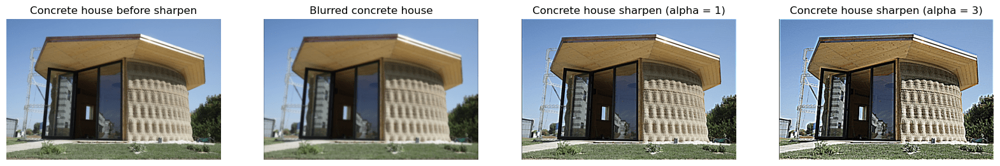
When sharpening with α=1, the edges become clearer and the overall sharpness improves without introducing strong artifacts. When increasing to α=3, the images look even sharper, but halos around strong edges, especially along high-contrast boundaries. This demonstrates that higher values of α enhance edge sharpness but can also lead to over-sharpening effects.
Evaluation
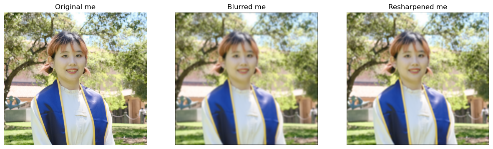
I used my photo to show the effect of blurring and then resharpening the image. After sharpening, the image becomes clearer than the blurred version, but it still does not fully recover the fine details of the original. This is because blurring removes high-frequency information, and sharpening can only enhance what remains rather than restore the lost details.
.
.
Part 2.2: Hybrid Images
Process with frequency analysis
I tried to create hybrid image of my parents to see how they look together! Here are the aligned version of the original high frequency image (my mom) and the original low frequency image (my dad). The right image is the final result of the hybrid operation.
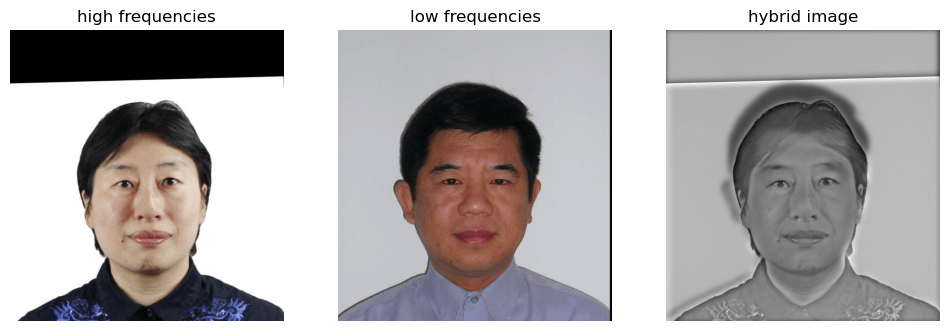
One image was processed with a high-pass filter (original minus Gaussian-blurred version) to retain the high-frequency details, while the other image was processed with a low-pass filter (2D Gaussian) to retain only the low-frequency components. These two filtered results were then added together to form the hybrid image.
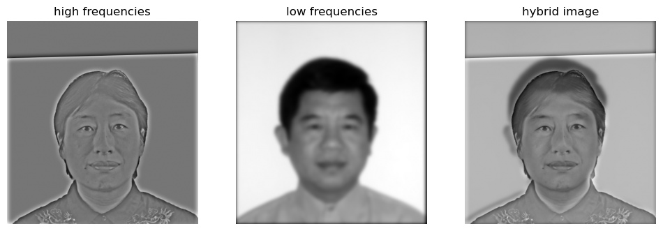
For the Gaussian smoothing, I used a kernel size of 35×35. The high-pass filter used a standard deviation of σ=8, while the low-pass filter was generated with σ=5. These cutoff frequencies were chosen experimentally to balance between clarity of the low-frequency structure and visibility of the high-frequency details.
The following image illustrates the entire pipeline: the Fourier transforms of the two input images, their filtered versions, and the final hybrid image in the frequency domain. The high-pass filtered image highlights the periphery of the spectrum (high frequencies, which looks very bright), while the low-pass filtered image retains only the middle of the spectrum (low frequencies, which looks dark at the corners). When combined, the hybrid image contains both types of information: when viewed up close, the high-frequency content dominates, and when viewed from farther away, the low-frequency structure becomes more apparent.
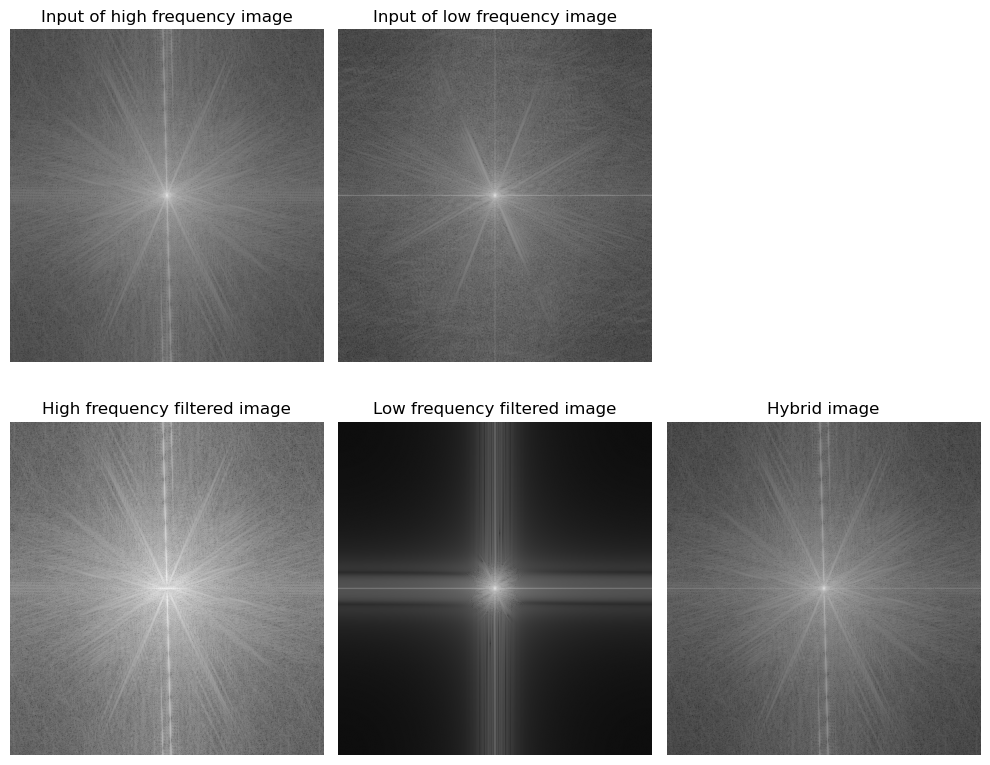
.
Other results
Here are all the results that I created with the same pipeline (I also applied the automatic cropping function that I wrote in project 1 to cut off the edges with aligning!):
Derek and cat Nutmeg:
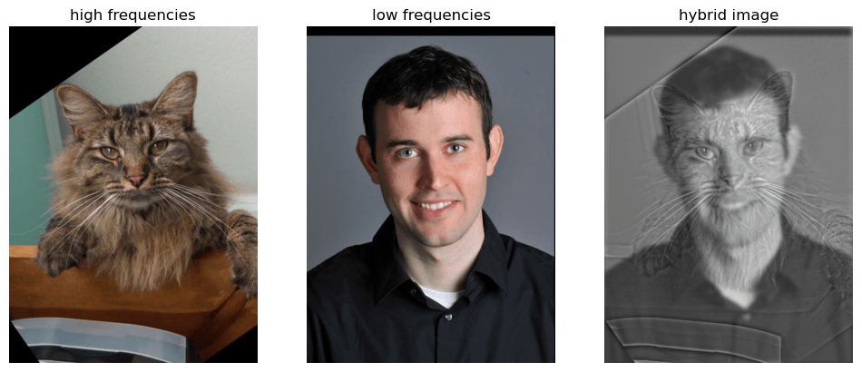
Me smiling and not smiling:

Me and a game character:
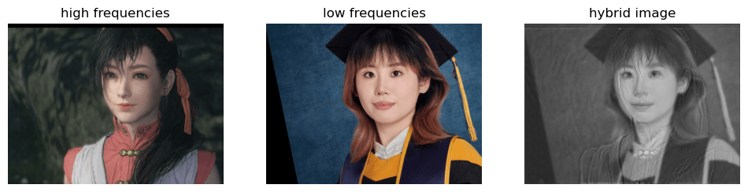
.
Bells & Whistles
To explore the effect of color in hybrid images, I compared four different cases: using grayscale for both inputs, adding color only to the low-frequency image, adding color only to the high-frequency image, and keeping both inputs in color.
From the results, adding color to the low-frequency image makes the hybrid look clearer and closer to a normal picture, especially when viewed from far away. Adding color only to the high-frequency image does not change much, since edges and fine details do not benefit a lot from color. When both images are in color, the result looks almost the same as when only the low-frequency one is in color. It works better to have the color in low frequencies!
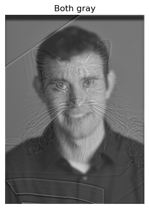
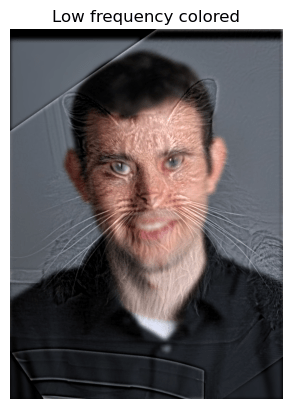
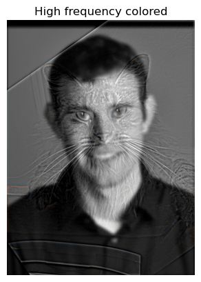
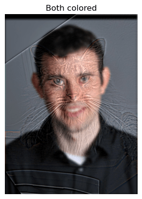
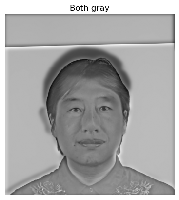
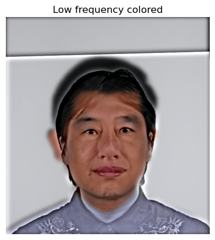
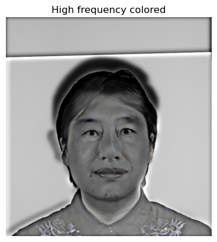
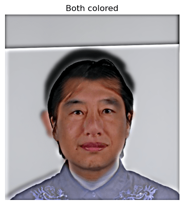
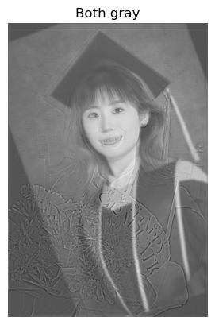
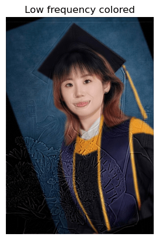
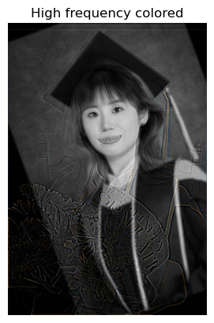
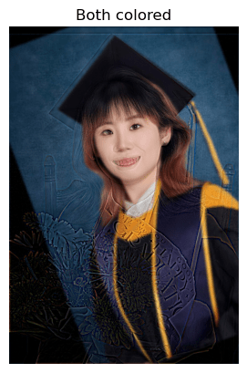
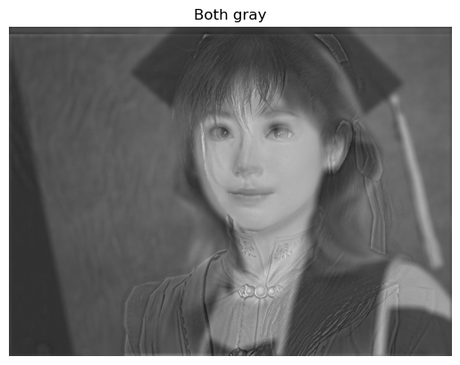
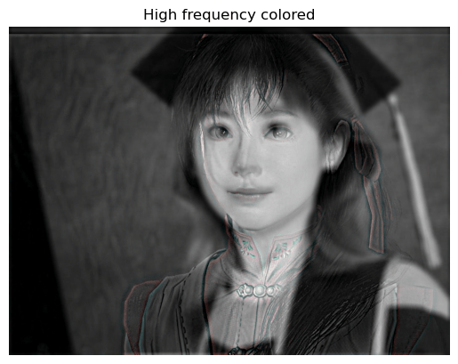
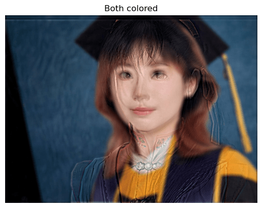
.
.
Part 2.3: Gaussian and Laplacian Stacks
To implement Gaussian and Laplacian stacks, I first wrote a function to build the Gaussian stack. The stack starts with the original grayscale image. For each higher level i, I applied a Gaussian filter with increasing standard deviation and filter size:
$$
\sigma = 2i, n = 6\sigma + 1
$$
This way, all levels in the stack have the same image dimensions, and the results can be stored in a single 3D matrix.
The Laplacian stack was then obtained by subtracting consecutive levels of the Gaussian stack. For each level i, the Laplacian image is defined as the difference between the Gaussian at level i and level i+1. The final level of the Laplacian stack stores the lowest frequency image, i.e., the last Gaussian image.
The Laplacian stack can be expressed as:
$$
L_i = G_i – G_{i+1}, \quad i = 0, 1, \dots, N-2, \quad L_{N-1} = G_{N-1}
$$
Below are the results of running the Laplacian stacks on the apple and orange images with level of 4:
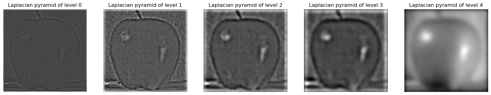
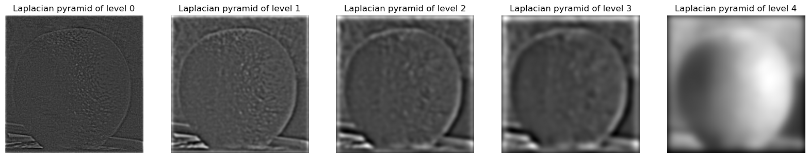
Here shows a colored version of the same operation (normalized for better visualization):
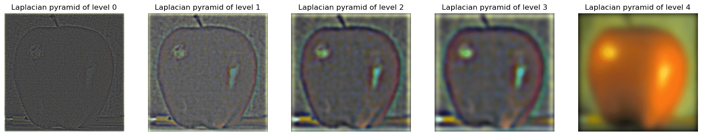
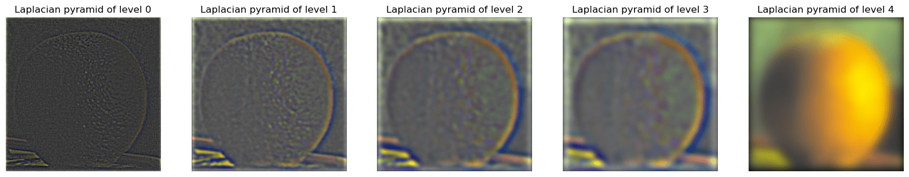
.
.
Part 2.4: Multiresolution Blending (a.k.a. the oraple!)
Gray Blending
I first applied the same Gaussian filters that were used for the apple and orange images to blur the mask.
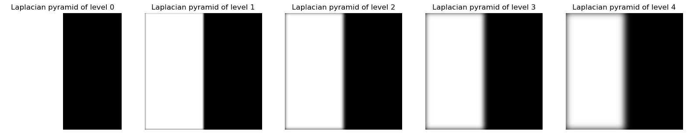
By applying this blurred mask to each level of the Laplacian stack, I got the following results, which combine the two inputs into a smooth blend (the “Oraple”).
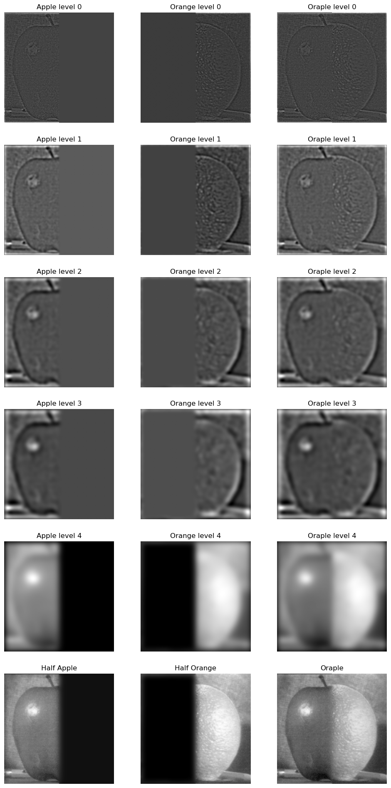
Here are some other blends in grayscale: a bread dog and crystal ball galaxy. They both used irregular masks to get the result!
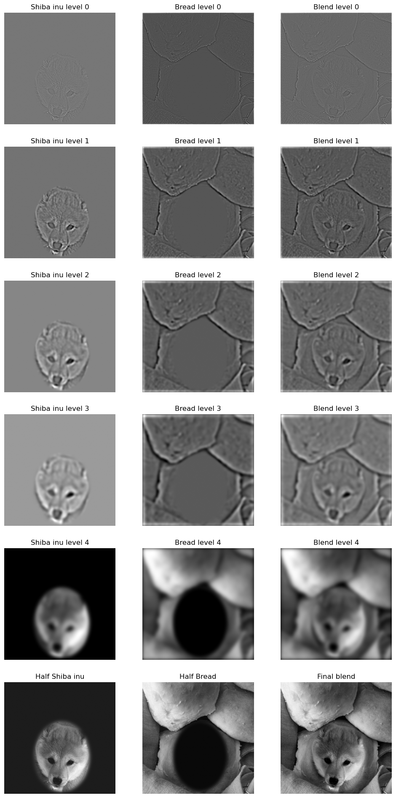
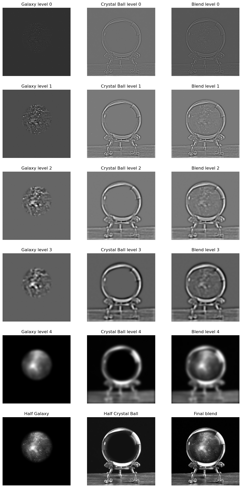
.
Bells & Whistles
Colored Blending
Here are the result blending images:
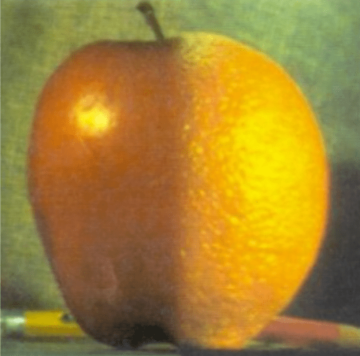
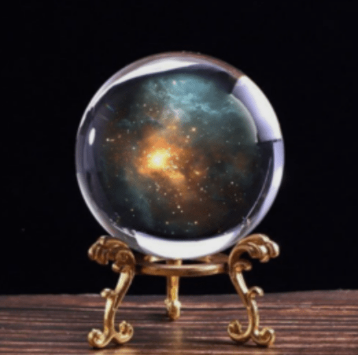
Here are the general process:
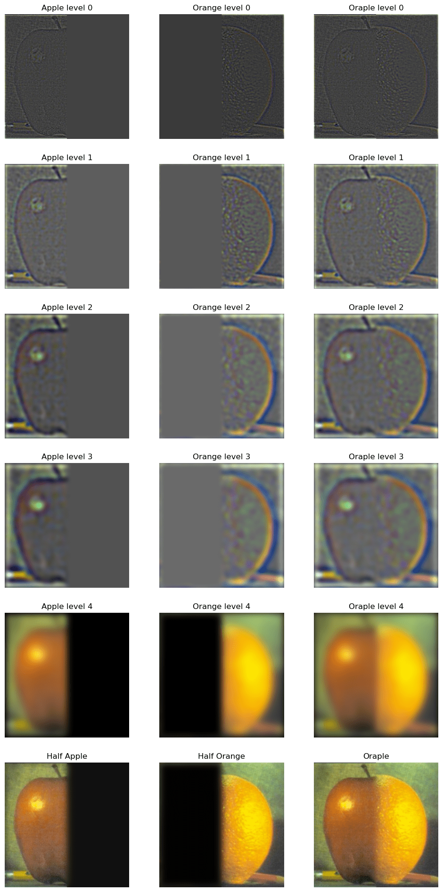
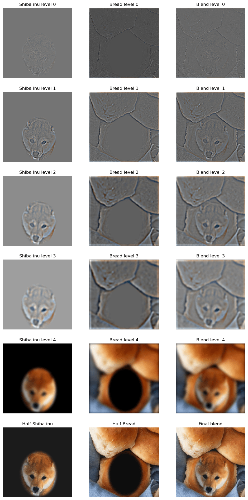
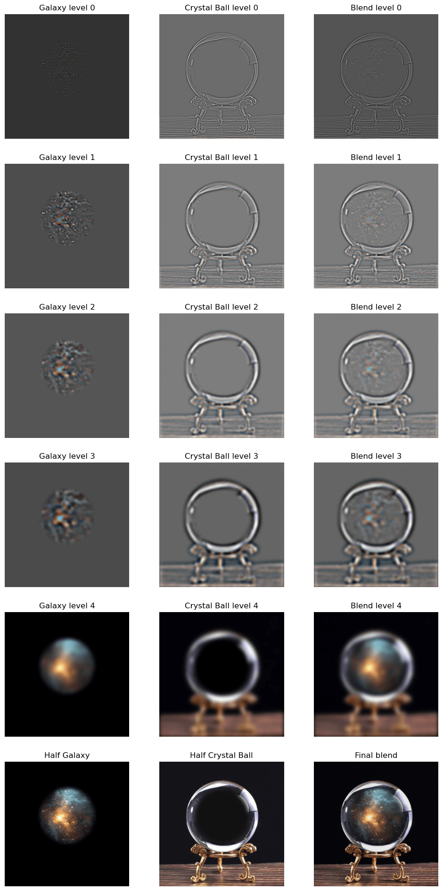
.
.
END